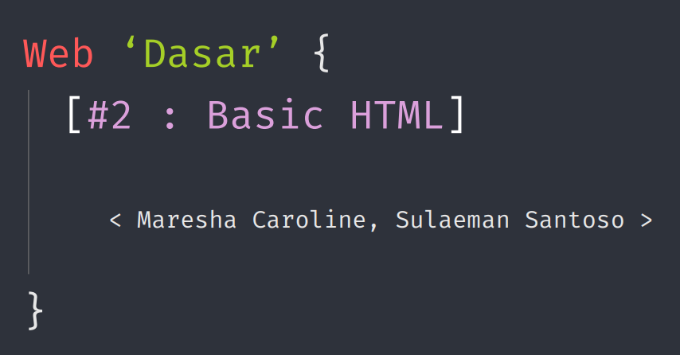

Materi oleh: Maresha Carolline
HTML singkatan dari Hyper-Text Markup Language. HTML. bukanlah bahasa pemrograman, melainkan dokumen khusus di mana jika kita mengetikkan kata khusus (tag) yang diapit dengan < dan >, browser akan membuat elemen web. HTML bersifat non case-sensitive.
Contoh Formatiing Teks Tambahan:
- Strikethrough:Teks salah ini dicoret
- Subscript: Rumus air adalah H2O
- Superscript : Luas persegi adalah 52